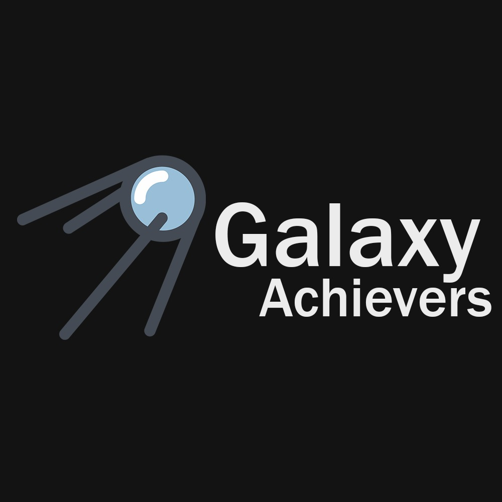

Team 19 (Galaxy Achievers)
My name is Ilqar Malikov.
I'm studying Computer Science. My hobbies are chess, playing guitar, geography and history.
My name is Farrukh Mammad.
Bla bla
My name is Aysu Azammadova.
This year is already my second year at ADA, and in the first year, I joined the English for Academic Purposes Program (EAPP) to improve my English. Ultimately, this year I started the education system necessary for my major. By the way, let me mention that my specialty is Information Technology. My area of interest is mainly in the renaissance of technology. New, improved, or never-before-seen inventions led me to choose this field. As for my other interests and hobbies, although I'm not a person who likes to be in very social and crowded places, I like to discuss and exchange ideas with my close friends under some headings. My hobbies include playing the piano as well. I participated in the piano course for 7 years starting from the 3rd grade and completed the course with high achievement in the 9th grade.
My name is Daniz Zeynalova.
Bla bla